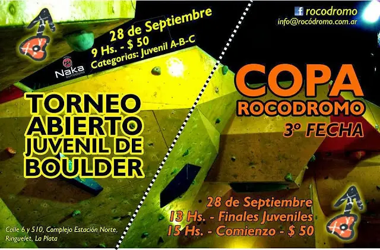

// FUERA DEL TRABAJO
El Chalten | Escalada
Es un lugar que marca un antes y un después. Increíble en toda su exención, pero su clima produce ese amor odio difícil de comprender.
27 de marzo de 2014 · 2 minutos de lectura

Mires por donde mires hay cosas para hacer, no hay día que quieras quedarte adentro mirando por la ventana. No es un lugar para ir a descansar, es más bien el lugar perfecto para practicar, aprender y hacer todas esas cosas que siempre quisiste. Desde trekking, deportiva, alpina, clásica, boulder y me quedo corto.
El ambiente del pueblo es casi en su totalidad climber, la sensación de estar caminando por el pueblo para ir a comprar algo que comer y ver pasar gente conocida con crashpads en su espalda es el sueño de todo escalador.
Es la habilidad de subir y apreciar el primer rayo de luz en la cima del olimpo o al final del día, hacer los mismos largos una y otra vez. Mis amigos, el lugar donde vivo, donde estudio, los trabajos que tengo, mis vacaciones todo gira alrededor de la escalada.
El regreso a casa se hace con muchos proyectos en la cabeza con la idea de algún día poder volver a realizarlos. Vamos de a poco, paso a paso, algún día estaré preparado para afrontar los desafíos que ofrece el macizo.
Viajes relacionados

Boulder | Copa Rocodromo
Parecieron ser un poco más "salidores", hasta que llega el cansancio y los más complicados, te dejan con las ganas. Se armaron 30 boulders más uno escondido en un meteorito.
Septiembre 2013
La Plata | Boulder
Participar de los eventos es una forma de medir el entrenamiento, del mismo modo que se rinde un final en la facultad y a su vez fomentar el deporte.
Julio 2013
Bariloche | Trekking
Salimos de la Ciudad de Bariloche, desde la base del Cerro Catedral, uniendo el Refugio Frey con la Laguna Jakob (Refugio San Martín).
Enero 2013Boulder | Copa Rocodromo
// EL SIGUIENTE PASO
TU PRODUCTO.
SU PRÓXIMA ETAPA.
Una primera conversación para entender el desafío y ver si puedo aportar valor.
↗ Hablemos de tu proyecto